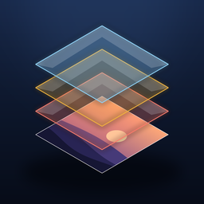

Sublayer
Photos carry more than you see. Sublayer shows the hidden layers inside an image file — location, a hidden preview of what you cropped, depth maps and portrait cutouts, names, captions, edit history, AI prompts and Content Credentials — and makes a clean copy that keeps only the picture.
日本語How to use
- Tap Choose Photos or Open from Files (up to 20 at a time).
- Tap a photo to see each hidden layer: what it is, what's in it, and any images stored inside the file.
- Pick a size (Original, 2048 px or 1080 px), then tap Peel & Share or Save Copy.
From the Share menu
In Photos, Safari or Files, select pictures and tap Share, then Peel with Sublayer. If you don't see it, scroll the row of apps and tap More. You can save or copy the clean copy without leaving the app you're in.
Clean copies are drawn fresh from the pixels, so nothing else from the original file is carried over. Things you can see in the picture itself, like a street sign or a house number, stay. Crop or cover them before you share.
FAQ
The Location layer doesn't appear for a photo I took
The photo may already have no location. In the Photos app, the Share screen has an Options button where location can be turned off, and Location Services may be off for the Camera.
What is the "hidden preview"?
Many image files carry a small copy of the picture. Some editing apps change the main image but leave this copy as it was, so it can still show what you cropped or covered. Sublayer shows it next to the photo.
Why does the clean copy look slightly different on HDR screens?
The HDR brightness map is removed with the other layers, so clean copies are standard range.
Does Sublayer change my original photo?
No. Sublayer only reads the original and saves a new copy when you ask.
Contact
日本語
Sublayer（サブレイヤー）は、写真ファイルの中に隠れた層（位置情報、切り取る前の隠れたプレビュー、深度マップや人物の切り抜き、名前、キャプション、編集履歴、AIのプロンプトやコンテンツ認証情報など）を見せ、絵だけを残したきれいなコピーを作るアプリです。
- 「写真を選ぶ」または「ファイルから開く」で読み込みます（一度に20枚まで）。
- 写真をタップすると、層ごとに中身を確認できます。
- サイズ（元のサイズ・2048 px・1080 px）を選び、「はがして共有」または「コピーを保存」をタップします。
写真・Safari・ファイルなどの共有メニューから「Sublayerではがす」を選ぶと、今のアプリを離れずに使えます。表示されない場合は、アプリの列をスクロールして「その他」をタップしてください。
きれいなコピーは画素だけから描き直すため、元のファイルのそれ以外の情報は引き継ぎません。ただし、標識や表札など写真そのものに写っているものは残ります。共有前に切り取るか隠してください。
お問い合わせ：tajimaru1209@gmail.com
Privacy Policy
Information we collect
Sublayer does not collect any personal information, photos, usage data or device information. There are no accounts, ads, analytics or tracking. The app does not connect to any server.
Your photos
Photos you open are read and cleaned only on your device. Sublayer saves a clean copy to your photo library only when you tap Save, and asks for permission to add photos the first time. Photos are never uploaded.
Settings
Your preferred size and format are saved only on your device and are deleted when you delete the app.
Maps
If you tap "See it on a map", the coordinates from your photo are opened in Apple Maps. Sublayer itself does not send them anywhere.
Purchases
Sublayer is sold through the App Store and payment is handled by Apple. We do not receive your payment information.
プライバシーポリシー（日本語）
Sublayerは、個人情報・写真・利用状況・端末情報を一切収集しません。アカウント、広告、分析ツール、トラッキングはなく、サーバーにも接続しません。写真の読み込みと処理はすべて端末の中で行い、保存はユーザーが「保存」をタップしたときだけ写真ライブラリに行います。「地図で見る」をタップした場合は、写真の座標をAppleのマップで開きます。購入はApp Storeを通じて行われ、支払い情報は受け取りません。
Changes
If this policy changes, we will update this page.
Last updated: November 22, 2026